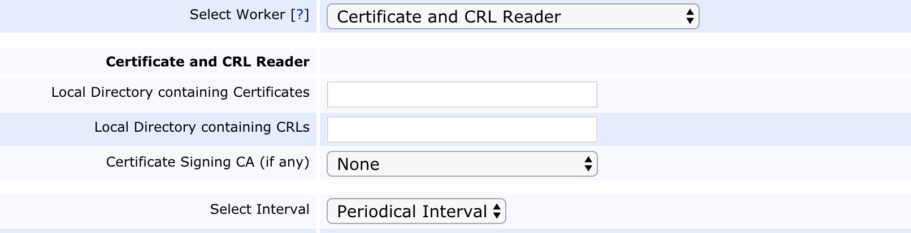

Services
The EJBCA framework for timer services handles procedures that run on a timely basis. The following services types are available:
CRL Updater Service: Checks if any of the configured CAs need a new CRL and generates it if necessary.
Certificate Expiration Check Service: Checks if a CA has certificates about to expire and sends an email notification to the end user and/or the administrator.
User Password Expire Service: Checks if a user has not enrolled for a new certificate within a specified amount of time after the user was last edited. If the user has not enrolled within this time, the user's status is set to Generated and the user will not be able to enroll.
Renew CA Service: Checks if CA certificates are about to expire and automatically renews them.
Publisher Queue Process Service: Retries failed publishing operations.
HSM Keepalive Service: Periodically tests all available Crypto Tokens to avoid connection timeouts.
Remote Internal Key Binding Updater: Automatically renews expiring OCSP signing certificates and keys at a connected VA.
CRL Download and CRL Update Service: Periodically downloads a CRL from the provided URL and imports it into EJBCA, also updating any revocation information for the certificates.
Certificate and CRL Reader Service: Reads certificates and CRLs written to a local directory from a CA using the SCP Publisher.
EJBCA also allows you to write plug-ins for customized services. For more information, see Writing Customized Services.
The following provides information on services in the following sections:
Service Configuration
A service consists of the following components: a worker doing the actual work, an interval determining the time to the next time the service should run, and an optional action of what should be performed if a certain condition occurs.
Workers
The worker is the class that will be executed when the service runs. Each worker can have different worker specific configuration.
Intervals
Periodical Interval
Defines in days/hours/minutes/seconds of how often the worker will be run. A worker should never be configured to run more often than the time a single invocation takes.
Actions
Mail Action
Action that sends an email notification when the service is executed and has the following settings:
Sender Address: The from-address used in the email.
Receiver Address: The to-address of the email of not specified by the worker.
Pin to Specific Node(s)
Allows choosing on which nodes the service is allowed to execute. By not choosing any nodes in the list, the service can be executed on any of the nodes.
On EJBCA startup, each node adds its hostname to the list of nodes. The list can also be manually edited on the System Configuration page.
Run on all Nodes
By default, services execute on only one node in a cluster, or one of the pinned nodes. However, certain services like the HSM Keepalive service should be run on all nodes.
Selecting Run on all nodes disables checking if a service has been running on another node and executes the service on all nodes.
The Run on all nodes option should normally only be enabled for the HSM Keepalive service. Do not select the option for any other service unless you are absolutely sure you know what you are doing.
Multiple Services and Clustering
A service worker should never run simultaneously on two nodes, or simultaneously on one node. To avoid running more than one instance on a single node there is a semaphore that inhibits more than one instance of the worker to run in a single JVM. If a worker starts and another worker is already running the worker is rescheduled to run on the next planned interval, and immediately terminated. To avoid running any two services on two nodes simultaneously, the service has a time stamp that is set when it runs and schedules the next run before the actual work is started. This time stamp makes it possible for another node to determine of the service is already running on another node and not start running.
In practice what this leads to is that a service will always run on a single node, the same node every time, but the running node may switch at times.
For most cases you do not have to pin a service to a specific node. Some reasons to pin nodes are:
HSM Keepalive services: This service should have one service running on each node, since it should keep the local PKCS#11 session alive.
External RA service: If having multiple RAs and running very often there may be a race condition with services competing to run. Pinning services to run on different cluster nodes towards different External RAs can increase performance and enhance simplicity.
Currently Available Services
CRL Updater Service
The CRL Updater checks if any of the configured CAs need a new CRL and generates it if necessary. The worker has no additional settings and only supports the periodical interval and no action.
The CRL Updater Service runs at Periodic Interval and generates new CRLs if any of the following conditions hold:
Current Time + Periodic Interval ≥ CRL Next Update - CRL Overlap
If CRL Issue Interval = 0
Current Time + Periodic Interval ≥ CRL Next Update
If CRL Issue Interval > 0
Current Time + Periodic Interval ≥ CRL Creation Date + CRL Issue Interval
If Delta CRL Period > 0
Current Time + Periodic Interval ≥ Delta CRL Next Update
Depending on the settings in the CA, different CRL generation times will be triggered. Especially when using the CRL Issue Interval, the issuing interval may not be exactly as configured, depending on how the Periodic Interval of the service is configured. It is important to not delay the CRL issuance longer than desired, as it may cause a CRL expiry with no new CRL.
Therefore, a new CRL will be issued while running the service, if an issuance time would normally occur between this run and the next time the service is run.
It is recommended to issue a CRL slightly too early than slightly too late.
The CRL Updater Service stores the generated CRLs in the CA's database. It does not publish the CRL anywhere. If you want to publish information about revoked certificates to an External VA, you must create a Validation Authority Peer Publisher.
Certificate Expiration Check Service
The Certificate Expiration Check Service worker checks if a CA has certificates that are about to expire and sends an email notification to the end user and/or administrator.
The following lists available worker settings:
CAs to Check: Select here which CAs that should be searched for expiring certificates.
Certificate Profiles to Check: If any certificate profile is selected from this list, the notification service will require that certificates are issued by the selected CAs AND that they are issued using one of the selected certificate profiles. Leaving this list empty will cause the service to search for certificates just based on the CA selection.
Time before notification is sent: The number of Days/Hours/Minutes/Seconds that should remain of the certificates validity before the notification is sent.
Send notification to end user: Check this if a notification should be sent to the owner of the certificate. Note that the end user must have an email set in the user database (not necessarily in the certificate) in order for the service to send the notification.
Notification Subject to End User: The e-mail subject.
End User Message - Message body of the notification. Substitution variables can be used here as defined in the E-mail Notifications section.
Send notification to Administrator: Check this if a notification should be sent to some defined administrator-mail address. The address of the administrator is configured in the Mail Action component.
Notification Subject to Administrator: The e-mail subject.
Administrator Message: Message body of the notification. Substitution variables can be used here as defined in the E-mail Notifications section.
You may configure multiple certificate expiration services specified with different Time before notification is sent values to further alert the user or administrator that a certificate is about to expire.
User Password Expire Service
A worker that checks if a user has not enrolled for a new certificate within a specified amount of time after the user was last edited. If the user has not enrolled within this time, the user's status is set to Generated and the user will not be able to enroll. The worker has the same basic setting as the Certificate Expiration Check Service, except for Time before notification is sent which is replaced by:
Time until user password expires: The number of Days/Hours/Minutes/Seconds that a user should be able to enroll for a certificate, i.e. the time before the user's password expire.
Renew CA Service
The renew CA service can be used to automatically renew CAs that are about to expire. This might be used for SubCAs that are valid only short periods of time. The specific settings are:
CAs to Check: CAs to be checked and renewed if they are about to expire.
Time before CA expires to renew: Amount of time before the CA actually expires, that the service should renew the CA.
For CAs using soft keystores and not using the default password, auto-activation is required.
Publisher Queue Process Service
The publisher queue process service processes the publisher queue. In the publisher queue, entries where publishing failed is collected. This service will try to re-publish entries from this queue. The specific settings are:
Publishers to check: Publishers this service should check and re-publish for. You can run one service for each publisher, or one service for all publishers.
If you run one service for each publisher, you should only configure one publisher in every service. Do not let two services handle the same publisher.
To read on how the algorithm to prevent excessive database load etc is done, the easiest way is to read in the java file for class PublishQueueProcessWorker.
The same algorithm as for the CRL update worker is used to make sure the service only runs in one instance on one node.
HSM Keepalive Service
The service periodically (with configured interval) goes through all available Crypto Tokens and makes a test signature if the following conditions are met:
The crypto token is a PKCS#11 crypto token, i.e. has a PKCS#11 library path configured.
The crypto token is active.
The crypto token has a key with alias 'testKey'.
If these conditions are met, a test signature with the testKey is performed. In addition, if security audit log protection is configured, a test string is protected with the security audit log protection, also testing this crypto token (which is not available in the crypto tokens in the GUI).
This will ensure that all configured PKCS#11 slots are used regularly, preventing connection timeouts that could lead to service downtime. You only need to enable this service if you encounter HSM timeouts. The occurrence of such timeouts depends on the specific HSM used, networking equipment etc.
Remote Internal Key Binding Updater
The service periodically (with configured interval) connects to the configured peer system using a Peer Connector and checks expiration of visible, usable and enabled Internal Key Bindings' certificates. For renewal to work, the issuing CA has to be usable on the system where this service is running and the same end entity that was used to issue the previous certificate must still exist.
Time before certificate expires: How long before the current bound certificate expires it should be renewed.
Renew key pair: Option to renew the key pair automatically before issuing a new certificate.
CRL Download and CRL Update Service
The service periodically downloads a CRL from the provided URL and imports it into EJBCA, also updating any revocation information for the certificates. For more information on how to use this on a Validation Authority, see Populating the OCSP Responder Database using the CRL Download Service in OCSP Management.
CAs to Check: Select the imported CA (or select ANY to process all external X509 CAs with a configured external CDP).
Ignore nextUpdate and always download the CRL: Select to force a download of the CRL whenever the service is executed instead of only downloading the CRL when the last known CRL indicates that a new one will be available.
Maximum allowed size to download (bytes): The Service will refuse to process CRLs that exceed this limit.
Period: How often the Service should check if a new CRL needs to be downloaded.
Active: Select to activate the service.
When the service is executed, there will be log entries showing if the CRL download and processing was successful.
If the downloaded CRL from the external CDP contains the Freshest CRL extension, the service will try to download and process any such URL that uses "http" as protocol.
Certificate and CRL Reader Service
ENTERPRISE This is an EJBCA Enterprise feature.
The Certificate and CRL Reader allows for populating a VA from a CA using the SCP Publisher. CRLs will be written in cleartext while certificates are serialized as org.ejbca.scp.publisher.ScpContainer objects, in order to retain revocation details and other pertinent information. Just like from the SCP Publisher, revocations can either be injected with complete information (including the certificate) or minimal (only the issuer, serial number and status). Upon successfully writing to the database, the certificate/CRL files will be removed automatically. If any error occurs, they will be left for future reads.
Note that the publishing CA's certificates need to be imported as External CAs prior to importing certificates in order to verify the signatures.

The following lists configurable fields:
|
Field Name |
Description |
|
Local Directory containing Certificates |
A directory containing certificate output. Note that the application server must have read/write rights to this directory. |
|
Local Directory containing CRLs |
A directory containing CRL output. Note that the application server must have read/write rights to this directory. |
|
Certificate Signing CA (if any) |
If a CA was selected to sign the certificate output files prior to writing. The public certificate will be used to verify the signature on the envelope. |
Writing Customized Services
It is possible to write customized component plug-ins that can be used with other standard (or customized plug-ins) and this section explains the steps necessary.
Common for all the components is that it is required to create a class implementing the components interface. Then you have to create a special jar containing the necessary plug-in classes and meta-data (described below) and deploy it to application server so it is included in the class-path. The next step is to create a service using the custom class and optionally the custom properties used by the component. The properties field has the same syntax as a regular Java property file.
The Jar must contain meta-data that describes which classes implement which interfaces. This is necessary since EJBCA enumerates all implementations using the ServiceLoader facility of Java. For each implemented interface the Jar must contain a file named META-INF/services/name.of.interface, for example META-INF/services/org.ejbca.core.model.services.IWorker. Each such file should contain a list of implementing classes, one per line. For example:
# Example file. Should be named META-INF/services/org.ejbca.core.model.services.IWorkercom.example.ejbca.MyWorkercom.example.ejbca.MyOtherWorkerIt is not possible to hot-deploy EJBCA when customized services are used.
Service components made for EJBCA 5.0 and earlier do not use the ServiceLoader facility and will not be auto-detected. To use a service component made for version 5.0 please set web.manualclasspathsenabled to true in conf/web.properties and specify the qualified class name manually (i.e. including package name).
CustomWorker
A Custom worker must implement the org.ejbca.core.model.services.IWorker interface. But a simpler way is to inherit the BaseWorker class. Then you have to implement one method 'void work()' doing the actual work every time the service framework decides it is time. The work method can make a call to the action (optional) component by 'getAction().performAction(someActionInfo);' The action info can vary depending on the action component, but it must implement the ActionInfo interface.
If something goes wrong during the work should a ServiceExecutionFailedException be thrown with a good error message.
See org.ejbca.core.model.services.workers.DummyWorker for an example implementation.
CustomInterval
A Custom Interval must implement the org.ejbca.core.model.services.IInterval interface. But a simpler way is to inherit the BaseInterval class. You then have to implement one method 'public long getTimeToExecution();' which should return the time in seconds until the next time the service is run. Or it should return DONT_EXECUTE if the service should stop running.
See org.ejbca.core.model.services.intervals.DummyInterval for an example implementation.
CustomAction
A Custom Action must implement the org.ejbca.core.model.services.IAction interface.
A simpler way is to inherit the BaseAction class. Then only the method 'performAction(ActionInfo actionInfo)' needs to be implemented. The methods should perform the action according to the defined properties and the ActionInfo (all optional). If something goes wrong during the processing of the action should a ActionException be thrown.
See org.ejbca.core.model.services.actions.DummyAction for an example implementation.